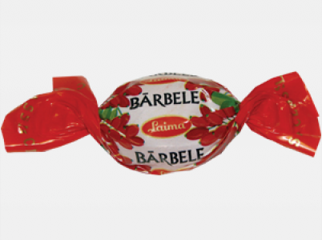
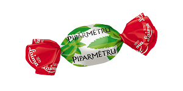
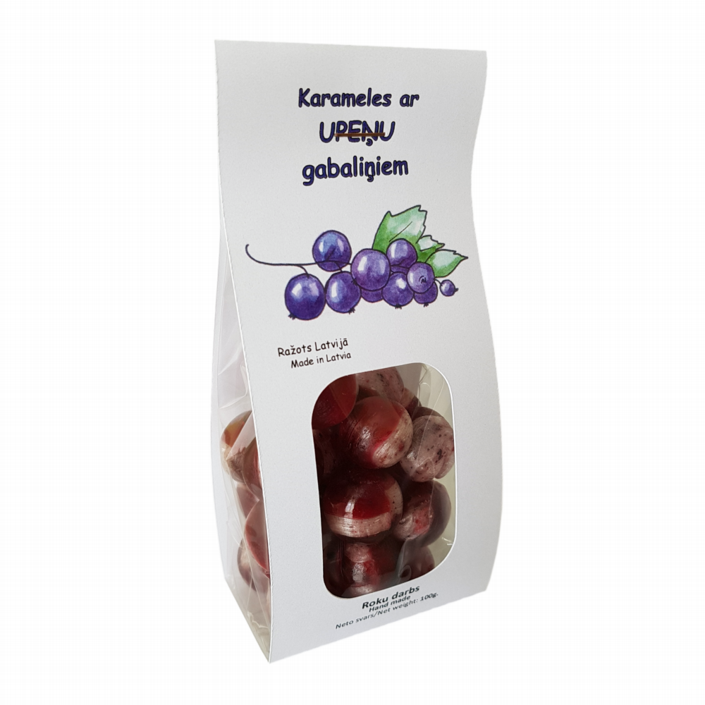
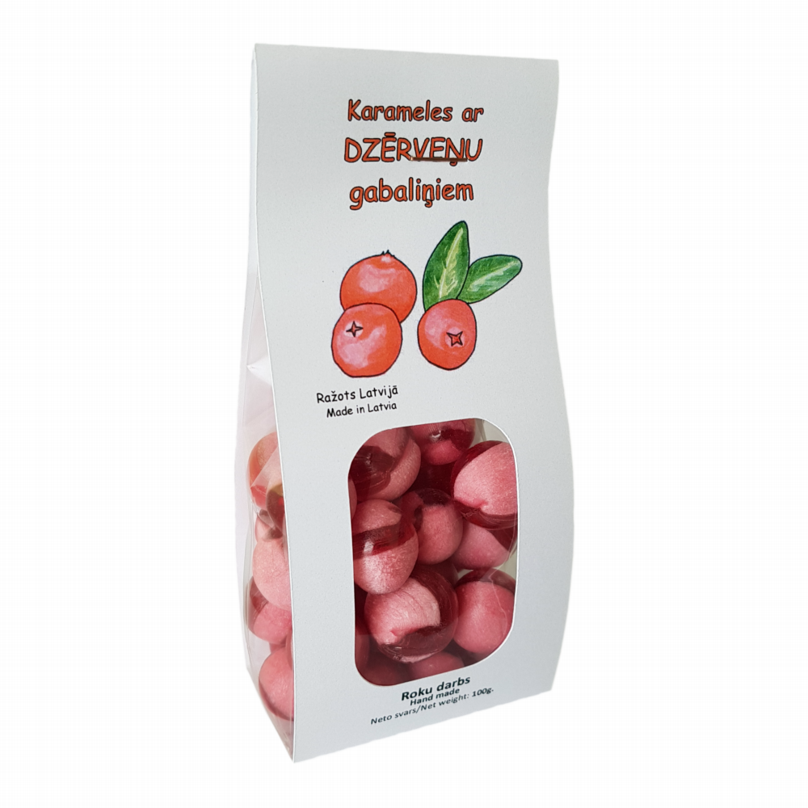

Šī krūma ogas izmanto dažādu ievārījumu, sulu un mērču gatavošanai (piemēram, pie gaļas ēdieniem). Ogas kaltē, sāla un marinē. Auga jaunās lapas var izmantot skābeņu lapu vietā ēdienu pagatavošanā. Nogatavojušos ogu mīkstums tiek izmantots kā citronu aizvietotājs.
Kādas konfektes Latvijā ražo no šī krūma ogām? Izvēlies atbilstošos attēlus
Kādas konfektes Latvijā ražo no šī krūma ogām? Izvēlies atbilstošos attēlus



